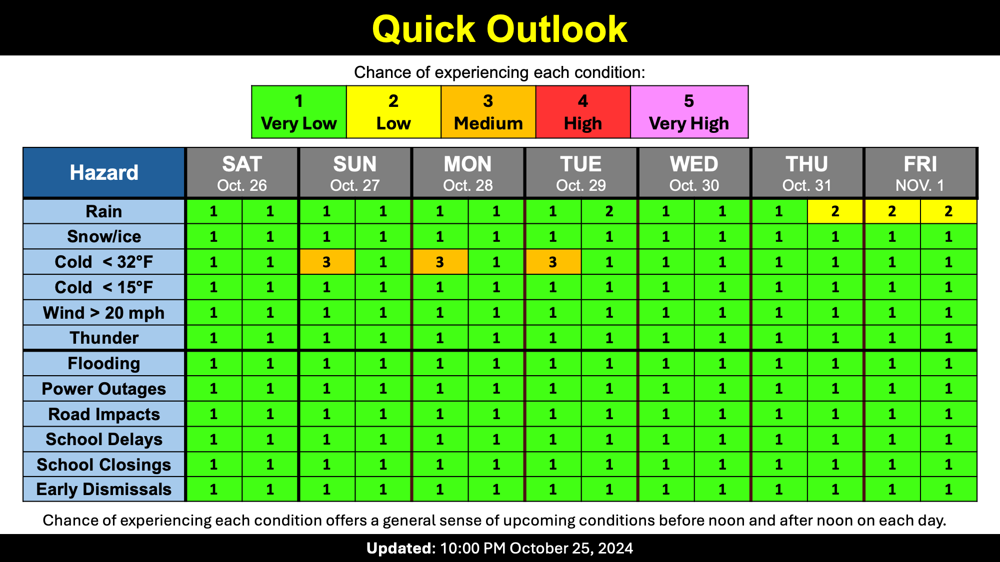

Dry and autumny
School Forecast
through Friday November 1st
Last updated: 10:00PM Friday October 25, 2024
| 0% (Nope) |
|---|
| 0% (Nope) |
|---|
| 0% (Nope) |
|---|
___________________
10:00PM Friday:
After record setting warmth earlier this week, temperatures here in the Hudson Valley have finally returned to normal autumn levels. This week's temperatures at the Dutchess County Airport across the river peaked at whopping 84°F on Tuesday. This was the warmest temperature since September 16th and the warmest it's been on October 22nd since 1979. The highs of 82°F on Monday and 80°F on Wednesday were both daily records for those dates, surpassing the previous records which were both set in 1979.
Now that our temperatures have returned to near-normal, there is the potential for frost this weekend. Temperatures each morning this weekend will fall into the low 30s, so don't be surprised if you do see some early morning frost. That said, the afternoons should defrost nicely with generally clear skies over the next few days. As we head into next week, temperatures will begin to gradually increase and so will the clouds. Afternoon temperatures will likely reach the mid-70s by Halloween, and while there will be increasing clouds, it does look like Halloween should be dry and rain free at least until after sunset.
Enjoy the autumny weather this weekend!
Next Update:
Early next week
-Ethan

KingstonSnows | Kingston, New York
Website built by Ethan Burwell